Crackme2 de mimas - Solution par elooo

Télécharger la cible (crackme-2.exe)
| Niveau | Outils | Auteur |
|---|---|---|
| Newbie(+) | Ollydbg | elooo |
Sommaire
Introduction
Ce crackme que propose mimas est destiné aux débutants ; il est simple à résoudre, j'espère juste que ce tutorial sera
aussi simple à comprendre.
Nous allons faire le travail par étapes. La dernière partie de ce tutorial est un bonus, elle n'était pas demandée. Pour reverser
le crackme en keygen, j'ai choisi la méthode la plus facile... en tout cas à mes yeux.
Par contre je pars du principe que le lecteur sait se servir d'Ollydbg, et par conséquent je ne détaillerai pas les fonctions du debugger qui vont
permettre de rajouter du code, sauvegarder des modifications dans un nouvel executable, etc.
Bon, let's go !

Choper son serial
Tout d'abord on voit que le nom Netbios de notre machine va être récupérée par le crackme, comme en témoigne le screenshot ci-dessous :
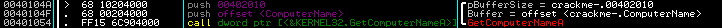
Et s'en suit quelques opérations sur le nom Netbios ainsi récupéré.
Je vais bien détailler cette partie car l'algo peut être difficile à comprendre pour les débutants:
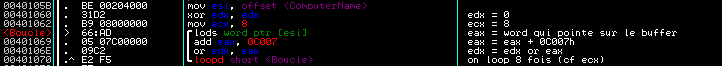
esi contient l'adresse mémoire qui correspond au début du buffer où est stocké le nom Netbios de la machine.
edx est mis à 0 et on met la valeur 8 dans ecx.
Puis on constate la présence d'une boucle.
lods est une abbréviation pour "Load String". Cette instruction met le contenu de la mémoire adresse pointée par esi
dans eax. Si le flag DF (Direction Flag : visible dans la fenêtre des registres dans ollydbg) est à 0, après chaque chargement
dans eax, esi sera incrémenté. Au contraire, si DF est à 1, esi sera décrémenté.
Ici DF était à 0, donc esi s'incrémentera à chaque fois, autrement dit on avancera dans le buffer qui contient le ComputerName, on ne reculera pas.
De plus on voit ici que lods manipule des words, donc se seront des words qui seront stockés dans eax, ou plus précisément dans ax (puisque que
seuls 16 bits seront utilisés et nécessaires pour cette opération).
Une fois la nouvelle valeur stockée dans eax, on lui ajoute 0C007h.
Puis on va effectuer une opération de OU Logique entre edx et eax ; edx contiendra la nouvelle valeur. Cette opération de
OU Logique est opérée via l'instruction or.
Détaillons un peu plus son fonctionnement :
Commençons par prendre deux valeurs hexadécimales à titre d'exemple... au hasard on va dire qu'on a 0CAFEh dans edx et 31000h dans eax...
On passe ces 2 valeurs en binaire :
edx = 0CAFE en hexa = 001100101011111110 en binaire (on rajoute deux 0 à gauche de la valeur binaire pour qu'on ait la même taille)
eax = 31000 en hexa = 110001000000000000 en binaire
Le OU Logique (or) suit une table de vérité qui est la suivante :
|
Vous aurez compris que les opérations du or s'effectuent sur les bits des valeurs binaires :)
Grossièrement résumé, on pourrait dire que si à un emplacement de bit donné, se trouve un 1, que ce soit dans edx ou eax, on aura en destination à ce même emplacement de bit un 1 aussi. Si par contre on a un 0 dans edx ET dans eax à la même position, on aura un 0 à cette même position de bit dans la destination.
Ce qui nous donnera avec l'exemple au-dessus :
edx = 0CAFE = 001100101011111110
eax = 31000 = 110001000000000000
Destination = 111101101011111110 = 3DAFE (qui sera stockée dans edx après calcul)
En espérant que ce soit un peu moins obscure maintenant :p
L'instruction loop permet d'effectuer une boucle jusqu'à ce que ecx soit à 0.
On a vu au-dessus que ecx était mis à 8, on en déduit donc qu'on bouclera 8 fois.
Bref, la valeur importante à l'issue se trouvera dans edx (dû au modifications apportées par le or), puis
stockée dans un buffer en 00402014 (je lui ai donné pour label dans Ollydbg "SerialHexa").
Passons au screenshot suivant :
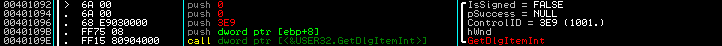
La fonction GetDlgItemInt permet de convertir le texte d'un control précis de la DialogBox en un entier.
Ici le control en question est l'EditBox où se trouve "Yaaah!!" à l'ouverture du crackme. C'est aussi l'EditBox qui attend
de vous le serial que vous allez lui suggérer.
Bref le plus important ici et surtout ce que je voulais montrer était le paramètre "IsSigned" de la fonction. Ici il est mis à False,
ce qui signifie que la serial entré sera converti en entier non-signé.
Voyons enfin le bout de code qui va vérifier le serial entré :
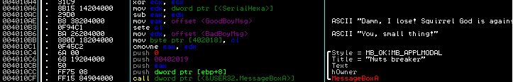
ecx est mis à 0.
Dans eax on a le serial qu'on a entré (on l'a entré sous forme de string, c'est à dire
en ascii) qui a été converti en entier non-signé.
On met dans edx le serial qui a été généré par l'algo du crackme (algo suivant la récupération du nom Netbios
de la machine... la fameuse boucle expliquée au-dessus).
Première chose : on soustrait l'entier qui a été converti à partir du serial qu'on a entré à l'entier qui a été généré
par l'algo du crackme.
On met l'offset du message GoodBoy dans eax.
sete est une abbréviation pour "Set If Equal". En fait il va tester le flag ZF (Zero Flag) : lors de la soustraction
de edx à eax, si le résultat est égal à 0, le flag ZF sera mis à 1, sinon il sera mis à 0.
Si le flag ZF est à 0 (donc que eax - edx = 0), l'instruction sete cl va renvoyer TRUE, autrement dit mettre cl à 1.
On met l'offset du message BadBoy dans edx.
cl est stocké dans un buffer en 00402018.
cmovne est l'équivalent d'un mov conditionnel : on déplace edx dans eax, à condition que le résultat de la soustraction entre edx et eax soit différent de 0 ("Conditional Mov If Not Equal").
Ce qui signifie que si le résultat de la soustraction est égal à 0 (= que le serial entré converti en entier non-signé est égal à l'entier généré
par l'algo), alors ce mov ne se fera pas, et eax conservera comme valeur l'offset du message GoodBoy.
Si le résultat de la soustraction est différent de 0, le message BadBoy viendra remplacer le message GoodBoy.
On voit que pour le paramètre Text de la MessageBox, eax est pushé, c'est donc bien ce mov conditionnel qui va décider de
l'affichage du message GoodBoy ou BadBoy.
Bref si on veut notre serial, il suffit de récupérer la valeur stockée en 00402014 (label SerialHexa) et de la convertir en décimal non signé :)
A noter que le sete cl au milieu de l'algo ne sert à rien quant à l'affichage du message GoodBoy ou BadBoy. Il est seulement là pour le test effectué sur le buffer en 00402018 lorsqu'on clique sur le bouton "Leaving" : si notre serial était juste avant de cliquer sur ce bouton, la MessageBox qui s'affiche normalement pour nous demander si on veut vraiment quitter ne s'affichera pas.
Coder son keygen
Voici la source de mon keygen en asm :
;======================================================================
; Crackme2 de mimas
;======================================================================
.486p
.model flat, stdcall
option casemap :none
;======================================================================
; Includes
;======================================================================
include \masm32\include\windows.inc
include \masm32\include\kernel32.inc
include \masm32\include\user32.inc
include \masm32\include\masm32.inc
includelib \masm32\lib\user32.lib
includelib \masm32\lib\kernel32.lib
includelib \masm32\lib\masm32.lib
;======================================================================
; Macros
;======================================================================
print MACRO Quoted_Text:VARARG
LOCAL Txt
.data
Txt db Quoted_Text,0
.code
invoke StdOut,ADDR Txt
ENDM
input MACRO Quoted_Prompt_Text:VARARG
LOCAL Txt
LOCAL Buffer
.data
Txt db Quoted_Prompt_Text,0
Buffer db 512 dup(0)
.code
invoke StdOut,ADDR Txt
invoke StdIn,ADDR Buffer,LENGTHOF Buffer
mov eax, offset Buffer
ENDM
;======================================================================
; DATA
;======================================================================
.data
Taille dd 512
Serial db 12 dup (0) ; Serial en decimal non-signe
TempConv db 12 dup (0) ; Serial en decimal non-signe mais a l'envers
;======================================================================
; DATA?
;======================================================================
.data?
ComputerName db 512 dup (?) ; Nom du computer
;======================================================================
; CODE
;======================================================================
.code
start:
pushad
print 13,10,"********************************************************"
print 13,10,"* Crackme2 de mimas *"
print 13,10,"* Keygen par elooo *"
print 13,10,"* Code en asm *"
print 13,10,"********************************************************"
print 13,10,13,10
;-------------------------------------------------------------------
; Recupere le nom Netbios de la machine
;-------------------------------------------------------------------
invoke GetComputerName, addr ComputerName, addr Taille
.if eax != NULL
print "ComputerName = "
invoke StdOut, addr ComputerName
;-------------------------------------------------------------------
; Algo qui permet de recuperer le serial en hexa
;-------------------------------------------------------------------
xor eax, eax
xor edx, edx
mov ecx, 8
mov esi, offset ComputerName
@@: lodsw
add eax, 0C007h
or edx, eax ; a la sortie du loop, edx = serial en hexa
loopd @B
;-------------------------------------------------------------------
; Conversion Hexa -> Decimal non-signe
;-------------------------------------------------------------------
lea esi, TempConv ; esi = offset de TempConv
inc esi
mov eax, edx ; eax = edx = serial en hexa
mov ecx, 0Ah
;-----------------------------------------------------------
; on convertit en decimal non-signe (sera stocke a l'envers)
;-----------------------------------------------------------
@@: xor edx, edx
div ecx
add dl, 30h
mov [esi], dl
inc esi
test eax, eax
jnz @B
mov edi, offset Serial
;-----------------------------------------------------------
; on remet le serial en decimal non-signe dans l'ordre
;-----------------------------------------------------------
@@: dec esi
mov al, [esi]
mov [edi], al
inc edi
test al, al
jnz @B
;-------------------------------------------------------------------
; On affiche notre serial
;-------------------------------------------------------------------
print 13,10,"Et ton serial tant attendu est : "
invoke StdOut, addr Serial
print 13,10
.else
print "WTF ? Pas moyen de recuperer le nom NETBIOS de ta machine :o ",13, 10
.endif
invoke ExitProcess,0
popad
END start
Il est téléchargeable ici.
J'aurais très bien pu utiliser la fonction WsprintfA pour la conversion Hexa en Decimal non-signé, mais pour la suite
du travail (la partie reverse du crackme), j'ai préféré m'en passer.
En effet j'ai décidé de ne pas importer d'autres fonctions que celles déjà importées dans le crackme de mimas, et comme
WsprintfA n'existe pas dans son crackme, j'ai décidé de coder une fonction de conversion dès l'élaboration du keygen...
Reverser le crackme en keygen
Avant de commencer à torturer ce pauvre crackme, il va déjà falloir définir nos besoins :
- Virer le code de vérification du serial
- Décider de comment et où on fera afficher notre serial avec le code déjà existant
On a vu qu'en fonction du résultat du test du serial, le crackme affichait soit le message BadBoy, soit le message GoodBoy
dans la MessageBox.
Pour notre reverse, on va pas se casser la tête, on va lui dire de nous afficher le bon serial à la place.
Evidemment si on vire l'algo de verif du serial, et qu'on torture un paramètre pushé pour MessageboxA, il ne faudra pas
s'attendre ensuite à ce que le crackme reversé puisse nous dire si on a juste ou faux en rentrant un serial quelconque dans l'EditBox...
Autre problème : il n'y a aucune fonction de conversion d'hexadécimal en décimal non-signé dans ce crackme, donc il va
falloir ajouter du code qui nous fera ça (ou importer une fonction d'api comme wsprintfA mais mimas m'a dit de pas vous
noyer avec des trucs qui pousseraient trop loin... donc je me bride... j'en parlerai pas plus ici... grrr :P)
On peut très bien utiliser l'algo de conversion codé pour mon keygen ci-dessus, par contre ça signifie qu'on aura besoin de
deux buffers supplémentaires pour stocker nos données : un buffer Serial (qui contiendra le Serial final en décimal non-signé) et
un buffer TempConv (buffer temporaire qui contient notre serial en décimal non-signé aussi mais à l'envers).
On ne peut pas décider de l'emplacement de ces deux buffers n'importe où, d'une part il faut les placer à un endroit inoccupé et qui n'est jamais utilisé, et ensuite il faut que l'endroit où on décidera de les placer soit "writable", sinon on aura droit à une belle exception "access violation"..., puisque le crackme va vouloir écrire dans ces buffers pour stocker les données.
Si on jette un oeil aux sections du crackme, on voit ça :
***************************************************************** * ShowPE 1.0 by elooo * ***************************************************************** -----> Log for : f:\_Montaf_\Crackme2_mimas\crackme-2.exe _________________________________________________________________ _________________________________________________________________ IMAGE_SECTION_HEADER _________________________________________________________________ SECTION 0X158 Name : .text 0X160 DWORD VirtualSize : 0X00000110 0X164 DWORD VirtualAddress : 0X00001000 0X168 DWORD SizeOfRawData : 0X00000200 0X16C DWORD PointerToRawData : 0X00000200 0X170 DWORD PointerToRelocations : 0X00000000 0X174 DWORD PointerToLinenumbers : 0X00000000 0X178 WORD NumberOfRelocations : 0X0000 0X17A WORD NumberOfLinenumbers : 0X0000 0X17C DWORD Characteristics : 0X60300020 -----> Contains executable code -----> Can be executed as code -----> Can be read SECTION 0X180 Name : .data 0X188 DWORD VirtualSize : 0X00000080 0X18C DWORD VirtualAddress : 0X00002000 0X190 DWORD SizeOfRawData : 0X00000200 0X194 DWORD PointerToRawData : 0X00000400 0X198 DWORD PointerToRelocations : 0X00000000 0X19C DWORD PointerToLinenumbers : 0X00000000 0X1A0 WORD NumberOfRelocations : 0X0000 0X1A2 WORD NumberOfLinenumbers : 0X0000 0X1A4 DWORD Characteristics : 0XC0300040 -----> Contains initialized data -----> Can be read -----> Can be written SECTION 0X1A8 Name : .rsrc 0X1B0 DWORD VirtualSize : 0X00005E30 0X1B4 DWORD VirtualAddress : 0X00003000 0X1B8 DWORD SizeOfRawData : 0X00006000 0X1BC DWORD PointerToRawData : 0X00000600 0X1C0 DWORD PointerToRelocations : 0X00000000 0X1C4 DWORD PointerToLinenumbers : 0X00000000 0X1C8 WORD NumberOfRelocations : 0X0000 0X1CA WORD NumberOfLinenumbers : 0X0000 0X1CC DWORD Characteristics : 0X40000040 -----> Contains initialized data -----> Can be read SECTION 0X1D0 Name : .idata 0X1D8 DWORD VirtualSize : 0X0000013C 0X1DC DWORD VirtualAddress : 0X00009000 0X1E0 DWORD SizeOfRawData : 0X00000200 0X1E4 DWORD PointerToRawData : 0X00006600 0X1E8 DWORD PointerToRelocations : 0X00000000 0X1EC DWORD PointerToLinenumbers : 0X00000000 0X1F0 WORD NumberOfRelocations : 0X0000 0X1F2 WORD NumberOfLinenumbers : 0X0000 0X1F4 DWORD Characteristics : 0X60000020 -----> Contains executable code -----> Can be executed as code -----> Can be read _________________________________________________________________
La seule section "writable" dans ce crackme est la section .data (cf "Characteristics"), c'est donc dans celle-ci qu'on va trouver un endroit
pour caser nos deux buffers.
Dans Ollydbg, on voit que cette section .data commence en 00402000 :
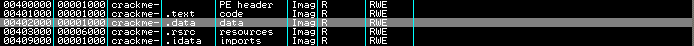
On va donc s'y rendre dans la fenêtre de dump, et on peut y voir que le début de cette section est déjà utilisée (cf la partie grisée) :
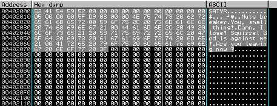
Il va donc falloir poser nos buffers après cette partie que j'ai volontairement grisée.
Ici par exemple :
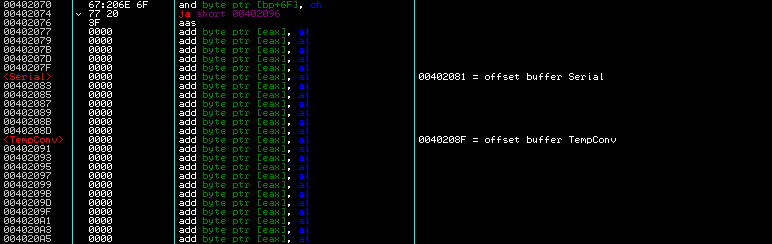
Passons maintenant aux modifications relatives au code.
On a dit au-dessus qu'on allait virer le bout de code qui allait vérifier le serial entré, donc on nop tout :
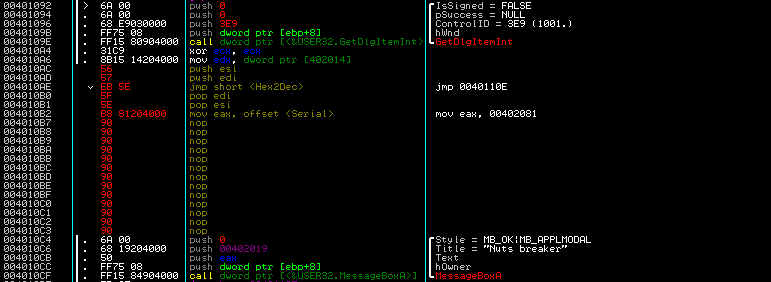
On garde cependant la ligne qui va mettre le serial en hexa dans edx (mov edx, dword ptr [402014]) puisque
notre algo de conversion Hex2Dec va avoir besoin de ce serial en hexa.
On push ensuite esi et edi, car l'algo de conversion Hex2Dec va utiliser ces deux registres, mais il faut savoir que sous
un OS autre que XP, l'utilisation de ces registres (ainsi qu'ebx) sans avoir pris la peine de les sauvegarder au préalable
risque de faire crasher... car ils sont aussi utilisés par le système. XP les sauvegarde tout seul comme un grand.
Bref on les push sur la pile, afin de pouvoir les restaurer ensuite à coup de pop, une fois l'algo de conversion Hex2Dec
exécuté.
Evidemment entre les push et les pop, il faut rediriger le code vers l'adresse qui contient le code qu'on va rajouter.
J'ai tout bêtement décidé de rajouter ce code à la suite du code déjà existant puisqu'il y avait de la place. Autrement dit,
il se trouve en 0040110E, comme en témoigne le screenshot ci-dessous :
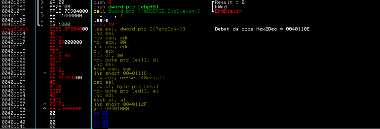
Rien de surprenant dans ce code rajouté : c'est le code de conversion que j'ai utilisé pour coder mon keygen, ni plus, ni moins.
Il faut juste ne pas oublier à la fin de rajouter un jmp pour refaire le branchement, afin que l'execution continue ensuite
(jmp 004010B0).
Une fois cette conversion faite, le serial converti en décimal non-signé se trouve dans le buffer Serial.
La MessageBox affichera le texte pointé par eax, comme on l'a expliqué plus haut, donc on met tout bêtement l'offset
de notre buffer Serial dans eax (mov eax, 00402081).
Passons maintenant aux modifications "cosmétiques"...
Le crackme reversé est à ce stade déjà fonctionnel et affiche bien notre serial dans la MessageBox quand on clique sur
le bouton "Let's fight!". Mais parce que du coup le combat n'a plus lieu d'être (le petit écureuil nous donne le serial
d'entrée de jeu :p), on va renommer ce bouton en "Gimme a nut!"
Pour faire cette modification, on va devoir accéder à la section ressources (.rsrc) du crackme.
Ollydbg nous dit qu'elle débute en 00403000 :
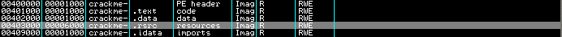
Donc on s'y rend via la fenêtre de dump et on y fait une recherche sur "Let's fight!" :
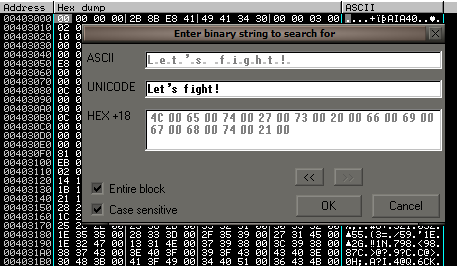
Une fois la string trouvée, Ollydbg nous amène directement à l'endroit recherché :
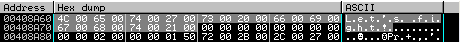
Et on est maintenant à même de remplacer la fameuse string. On sauvegarde et voilà c'est fini :)
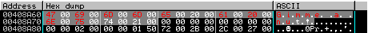
Le crackme reversé en keygen est téléchargeable ici.
Remerciements
Qui veut :p
Cordialement,
elooo.